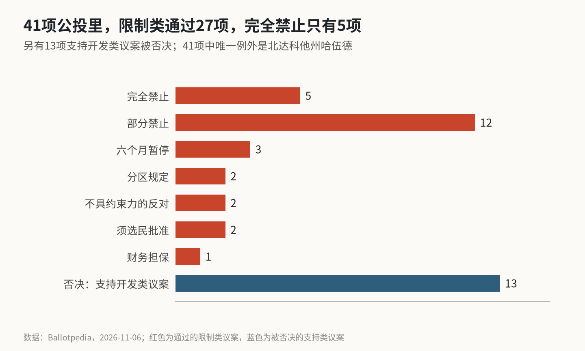

40比1的选票之后，数据中心的账单落到了谁头上
41项地方公投里有40项站在限制一边，但完全禁止的只有5项；联邦这头，参议院周一表决的法案要让数据中心自付电网成本，Anthropic则已经自己买发电机。
这里要算的是：11月3日美国地方选民对数据中心说“不”，到底挡住了多少建设，又把多少成本推回给开发商。按Ballotpedia的统计，41项与数据中心相关的地方公投中，有40项的结果有利于限制开发；拆开看，通过的27项限制类议案里，完全禁止只有5项，其余是部分禁止、六个月暂停、分区规定和附加条件。结论是：这次选举改变的主要是成本和审批节奏，而不是“能不能建”。
41项公投的分类一览
| 类别 | 数量 | 分布 |
|---|---|---|
| 完全禁止 | 5 | 加州1、佛州1、俄亥俄3 |
| 部分禁止 | 12 | 堪萨斯3、缅因1、俄亥俄8 |
| 六个月暂停 | 3 | 均在缅因 |
| 分区规定 | 2 | 俄亥俄亚当斯县 |
| 不具约束力的反对 | 2 | 伊利诺伊 |
| 须选民批准 | 2 | 俄亥俄格罗夫城、威斯康星简斯维尔 |
| 财务担保 | 1 | 俄亥俄佩里 |
| 被否决的支持类议案 | 13 | 7项不具约束力的支持、4项重新分区等 |
41项中唯一的例外在北达科他州哈伍德，选民否决了一项针对数据中心等开发项目的审查要求。

俄亥俄是这次的中心：5项完全禁止里占3项，12项部分禁止里占8项。附加条件类议案的写法很具体。格罗夫城要求，占地超过50英亩、用电超过20兆瓦或日用水超过50万加仑的项目必须由选民批准；佩里要求申请税收优惠的超大规模数据中心向社区提供财务担保。
限制的形状：门槛比禁令多
把27项限制拆开看，“完全不许建”只占不到五分之一。大多数议案做的是三件事：划出区域、设定规模门槛、要求开发商额外承担成本或接受投票。对一个计划建设几百兆瓦园区的开发商来说，这些条款的含义是选址更难、时间更长、谈判对象更多，而不是项目归零。
还有一点容易被头条数字盖住：Ballotpedia的统计范围是人口最多的100个城市、各州首府、加州和弗吉尼亚全境，以及另外纳入的数据中心相关议案。这41项不是全美所有地方决定，也不代表全美选民的平均态度。
州一级的变化更大。得州候任州长吉娜·伊诺霍萨承诺，在州议会通过保护居民的法律之前冻结数据中心审批，这一表态目前来自X上的转述。CoreWeave的CEO已经写信给她，表示支持“数据中心增长必须惠及得州民众”的原则，并希望推进已获批项目。
联邦这头：周一的60票门槛
参议院定于美东时间11月9日下午5点30分（北京时间11月10日早上6点30分）进行一次程序性表决：对H.R. 2347的议事动议进行终止辩论表决，这是两党《美国可负担性与就业法案》的载体，需要60票。法案的四名提案人11月7日发布了替代修正案，民主党参议员海因里希说，法案要确保数据中心为自己用的电和造成的电网升级付费，而不是转嫁给居民。
这和地方选票指向同一方向：数据中心可以建，但电网成本要自己出。韩国三星证券在分析存储股时也给出了相似判断，认为监管的核心是成本分摊，而不是禁止建设。周一的表决只是让法案进入辩论，即使通过，文本也还会改。
自己发电的账
开发商已经在用钱绕开电网。据英国《金融时报》报道、CNBC转述，Anthropic在9月底以约34亿美元从得州设备商OnePWR买下了1.7吉瓦重型燃气发电机的供货承诺，并包括安装所需的工程与建设能力。按这两个数字算，每千瓦约2000美元。Anthropic此前对外的口径是，未来十年将在AI基础设施上投入超过5000亿美元，34亿美元只占其中约0.7%。
⚠️ 这笔交易目前只有《金融时报》援引的知情人士，Anthropic和OnePWR没有回应，路透社也未能立即核实。
自建电源的好处是不必排队等电网接入，代价是燃料、排放审批和本地居民的又一次反对。地方公投里出现最多的正是用电和用水门槛，这条路并不比接电网轻松。
市场怎么交易这件事
11月5日，费城半导体指数单日下跌12.25%，是历史上第二大的单日跌幅；第二天反弹4.21%。一周内美光跌22%，闪迪跌27%。市场的第一反应，是把选举结果当成AI基础设施需求的拐点在交易。
但从上面的分类看，新增的是成本，而不是需求的消失。真正会改变算力供给节奏的，是审批时间拉长多少、电网成本由谁承担、自建电源能否获批，这三件事都要在接下来几个月的具体项目里才看得见。
对这轮数据中心监管的判断
总的来说，11月3日的选票让数据中心建设变得更贵、更慢，但没有让它停下来。完全禁止只有5项，联邦法案的方向是让开发商付费而不是禁止，头部AI公司已经在用自建电源对冲审批风险。
风险在于州一级的冻结可能比地方公投更有约束力，得州如果真的冻结审批，影响的就是全美最大的建设区之一；12月还有阿肯色和北达科他的三项地方表决。机会在于周一的程序性表决如果过关，成本规则会变得更清楚，开发商可以重新定价，而不必在不确定中停工。
能说明方向的信号有三个：周一表决的票数，得州新州长1月就职后的第一份行政命令，以及大型云厂商下一季资本开支的指引有没有下调。
免责声明：本文依据公开统计与媒体报道整理，不构成任何投资建议。
X 上怎么看
结论 · 分歧：多数认为成本上升、节奏放缓，少数认为需求拐点
▲ 看多4 位
▼ 看空2 位
● 分歧或中性4 位
观点为 X 用户当日公开帖子的中文摘要，忠于原文但有删减；标「未核实」的为预测、个人推测或单一来源说法。立场为人工判断。
数据来源
- 公投分类、数量、分布与统计范围来自Ballotpedia 11月6日简报原文。
- 参议院表决时间与议程来自国会记录，替代修正案与海因里希表述来自参议院能源委员会发布，均据FourWeekMBA整理。
- Anthropic发电机交易来自《金融时报》，经CNBC转述；路透社未能核实，正文已标⚠️。
- 得州候任州长表态与CoreWeave CEO来信来自X上的转述帖。
- 三星证券关于“成本分摊”的判断来自eToday。
- 每千瓦2000美元、占5000亿美元0.7%为本文计算；北京时间换算按美东冬令时UTC−5。
- https://news.ballotpedia.org/2026/11/06/voters-favored-limiting-data-center-development-in-40-of-41-local-ballot-measures-on-nov-3/
- https://fourweekmba.com/ai-senate-sets-monday-test-for-bill-making-data-centers-pay/
- https://www.cnbc.com/2026/11/08/anthropic-generator-deal-ai-data-centers.html
- https://www.etoday.co.kr/news/view/2644860
- https://aistockwire.com/blog/philadelphia-semiconductor-index-second-worst-day-10-percent-drops-november-2026
- https://x.com/Zen_with_AI/status/2119233026454589749
- https://x.com/fxtrader/status/2119249896821927977